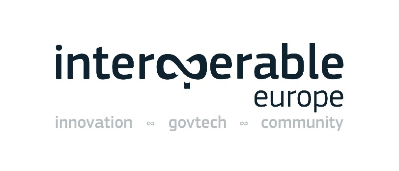

Digital Public Administration factsheet 2023
Iceland
1 Interoperability State-of-Play 4
2 Digital Public Administration Political Communications 8
3 Digital Public Administration Legislation 15
4 Digital Public Administration Infrastructure 20
5 Digital Public Administration Governance 26
6 Cross-border Digital Public Administration Services 28

Interoperability State-of-Play
1
1
Interoperability State of Play
In 2017, the European Commission published the European Interoperability Framework (EIF) to give specific guidance on how to set up interoperable digital public services through a set of 47 recommendations divided in three pillars. The EIF Monitoring Mechanism (MM) was built on these pillars to evaluate the level of implementation of the framework within the Member States. Whereas during the previous, the MM relied upon three scoreboards, the 2022 edition includes an additional scoreboard on cross-border interoperability, assessing the level of implementation of 35 Recommendations. The mechanism is based on a set of 91 Key Performance Indicators (KPIs) clustered within the four scoreboards (Principles, Layers, Conceptual model and Cross-border interoperability), outlined below.
Source: European Interoperability Framework Monitoring Mechanism 2022
Each scoreboard breaks down the results into thematic areas (i.e. principles). The thematic areas are evaluated on a scale from one to four, where one means a lower level of implementation and four means a higher level of implementation. The graphs below show the result of the EIF MM data collection exercise for Iceland in 2022, comparing it with the EU average as well as the performance of the country in 2021.
Source: European Interoperability Framework Monitoring Mechanism 2022
Iceland’s results in Scoreboard 1 show an overall good implementation of the EIF Principles. Areas in need of improvement are concentrated in the Principles 1 (Subsidiarity and Proportionality), 5 (Technological Neutrality and Data Portability), 7 (Inclusion and Accessibility), 9 (Multilingualism), and 12 (Assessment of Effectiveness and Efficiency). Indeed, the alignment and tailoring of national interoperability frameworks and interoperability strategies comply partially with the EIF (Principle 1 – Recommendation 1) and the country should impose less technological solutions on citizens, businesses and other administrations that are technology-specific or disproportionate to their real needs (Principle 5 – Recommendation 8). Other areas of improvement in order to reach a higher score concern the use of e-accessibility specifications to ensure that all public services are accessible to all citizens, including persons with disabilities, the elderly and other disadvantaged groups (Principle 7 – Recommendation 14), and the implementation of evaluation mechanisms to assess the effectiveness and efficiency of interoperable solutions (Principle 12 – Recommendation 19).
Source: European Interoperability Framework Monitoring Mechanism 2022
The Icelandic results for the implementation of interoperability layers assessed for Scoreboard 2 show an overall very good performance. Potential areas of improvement to enhance the country’s implementation of the recommendations under Scoreboard 2 are concentrated in the area of interoperability governance. More specifically, the score of 2 for Iceland in Recommendations 22 and 23, both referring to the need to have process and catalogues for standards and work standardisation as well as to take into account relevant EU recommendations and seek to make the approach consistent across borders, lowers the overall governance interoperability result for Iceland.
Source: European Interoperability Framework Monitoring Mechanism 2022
Iceland’s scores assessing the Conceptual Model in Scoreboard 3 show a lower-medium performance in the implementation of recommendations associated with all components except the Conceptual model itself. More specifically, the country should increase its efforts with regard to Internal information sources and services and open data by, for example, developing a shared infrastructure of reusable services and information sources that can be used by all public administrations (Internal Information Sources and Services – Recommendation 36) and establishing procedures and processes to integrate the opening of data in common business processes, working routines, and in the development of new information systems (Open Data – Recommendation 41). Another area of improvement is Security and Privacy; in order to reach a higher score, Iceland should enhance the use of trust services according to the Regulation on eID and Trust Services as mechanisms that ensure secure and protected data exchange in public services (Security and Privacy – Recommendation 47).
Source: European Interoperability Framework Monitoring Mechanism 2022
The results of Iceland concerning Cross-border interoperability in Scoreboard 4 show an at upper-middle performance of the country in 6 indicators. Particularly, Iceland has a high performance with the maximum score of four in Principles 2 (Openness), 6 (User-centricity), 8 (Security and Privacy), 11 (Preservation of information) as well as Legal interoperability and Technical interoperability. However, Iceland still has margin for improvement in relation to Integrated public services governance, Internal information sources and services, and Open Data. For instance, efforts could focus on establishing procedures and processes to integrate the opening of data in the common business processes, working routines, and in the development of new information systems (Recommendation 41).
Additional information on Bulgaria’s results on the EIF Monitoring Mechanism is available online through interactive dashboards.
Curious about the state-of-play on digital public administrations in this country? Please find here some relevant indicators and resources on this topic: |

2
Digital Public Administration Political Communications
Cloud Computing Strategy 2021
On 27 June 2022 the government published the Cloud Computing Strategy. The Cloud Strategy is the first comprehensive document on the use of cloud solutions by public bodies and sets out the government's goal of making Iceland among the world’s leading nations in the provision of digital services. The purpose of the public cloud policy is to achieve harmonised goals in the use of cloud solutions and their implementation within the public sector. Cloud solutions are already in use by many public bodies, making it urgent to co-ordinate these projects for efficiency and increased security purposes. The emphasis on digital services and user-centric service design has increased the demand on institutions for a fast and efficient service. Cloud solutions that shorten the delivery time of infrastructure and IT services contribute to the quick, effective and secure provision of digital services. Cloud services also open up new opportunities, e.g., in the field of artificial intelligence, and for deeper data analysis, which would otherwise be difficult or impossible to exploit. A Dynamic Purchasing System (DPS) was introduced by the Central Public Procurement Agency in the first quarter of 2022 to support purchasing of cloud services.
Government Data Security Classification
Data Security Classification is a prerequisite for more secure storage, handling and mediation of public sector data. It is also an important step in harmonising and amplifying more effective use and exchange of data between public bodies, the private sector and citizens. The classification was published in 2022. The classification scheme directly and indirectly impacts the use of cloud services in the public sector.
Digital Strategy
The Digital Strategy was published in July 2021. It outlines the government’s vision for the use of information technology and digital channels to provide excellent services in a secure manner. It is also intended to strengthen Iceland's competitive position and increase prosperity through innovation and a more efficient society.
An implementation plan is already in place and includes actions on the four pillars of the strategy.
National Cybersecurity Strategy 2022-2037
A new national Cyber Security Strategy, covering the period 2022 to 2037, was published in February 2022. The strategy pursues two goals:
The strategy will be accompanied by an action plan, which was released during the first half of 2022. The Ministry of Higher Education, Science and Innovation is responsible, working with relevant Ministries and other stakeholders, for identifying specific initiatives to achieve the strategy objectives. The same Ministry will also be responsible for monitoring and reporting on the overall progress of implementing the actions of the action plan.
Government Action Plan
The coalition platform of Iceland’s current government, which took office in October 2021, puts strong emphasis on digital transformation and more effective use of data:
The government’s medium-term fiscal plan for 2023-2028 describes individual actions in more detail. These actions are intertwined with the strategies and policies already mentioned in this chapter.
Digital Iceland
The technical policy of Digital Iceland was published in 2019. The policy sets out a technical framework for all projects carried out under the leadership of both the Ministry of Finance and Economic Affairs and the task force Digital Iceland, in cooperation with all agencies, municipalities, Ministries and enterprises. The policy is an important part of the government's plan on improved digital communication to the public. It also supports the objectives defined in the Nordic/Baltic Partnership, as stated in the Digital North 2.0 Declaration.
To ensure progress in the wide range of public digital projects planned, Digital Iceland published a tender in December 2019 and again in 2021. In the tenders, Digital Iceland sought to conclude agreements with software development teams to work on digital public solutions for the national portal Island.is. A revamped portal for public services, Island.is, was launched in 2020, to provide a central point of access to all digital public services.
The number of visits to the site has increased steadily since then, and by December 2022 the number of visits corresponded to 82% of the population visiting it every month. The availability of public services through the portal has also increased significantly since it was launched.
Digital North 2.0
The ministerial declaration Digital North 2.0 for the period 2021–2024 was finalised in the fall of 2021 and signed by the Ministers for Digital Development of Norway, Sweden, Denmark, Finland, Iceland, the Faroe Islands, Greenland, Åland, Estonia, Latvia and Lithuania. The declaration is in line with the Vision 2030 for the Nordic countries and features three policy goals. Iceland is committed to the common goals and individual projects that the declaration entails.
Iceland Rural Fibre Project
Around 370 000 people lived in Iceland in 2021, 4.7% of them in rural areas. The Iceland Rural Fibre Project is a government initiative to roll out optical cable connections to nearly all permanent residences in rural areas from 2016 to 2022. The State contributes to the funding of the project, and local governments can apply for subsidies to supplement their own contributions. The project operates under the auspices of the Telecommunications Fund. Fibre rollout in rural areas also plays a role in upgrading core communications systems nationwide, which is a prerequisite for greater reliability, coverage and data-transmission speed across all mobile networks in the entire country. The project concluded in 2022, having contributed to the main broadband policy goal, namely that 99% of households and businesses nationwide have fibre access or are within 50 meters from fibre access by the end of 2025. As of 2022, according to the Electronic Communications Office of Iceland (ECOI), that number stands at 95%.
Unique Office IT Supplier for the Entire Public Sector
On 1 June 2019, Iceland became the first country to sign a contract which will make Microsoft the sole IT supplier for its entire public sector. The contract was renewed on 1 June 2021 and is valid for 5 years. The country teamed up with a single IT partner for the provision of a common cloud platform: Microsoft 365.
The introduction of Microsoft 365 aims to consolidate all services into a single license, while guaranteeing increased communication and collaboration between institutions.
Peter Quarfordts Skov, Public Sector Director at Microsoft Denmark & Iceland, commented that the contract marked a shift in the way public sector and public services are perceived. He added that, as more countries digitalise their public services, there is an increasing need to enhance services, products and processes, not to mention the level of security. Although the decision should lead to increased interoperability among different public bodies, it increases the risk of vendor lock-in.
Core Services of Island.is
Digital Iceland is developing so-called core solutions to facilitate the development of digital services on Island.is. The aim of the solutions is to support and co-ordinate the development of digital public service processes for the adoption of public entities. The Island.is core services are briefly described here below:
Laws on the Reuse of Public Sector Information
Iceland already has laws on the use and reuse of public sector information. These laws are under revision in accordance with EU Directive 2019/1024 on the subject. Similarly, Iceland is preparing new legislation based on EU Directive 2018/1807 on the free flow of non-personal data.
Iceland is a member of the Nordic-Baltic cooperation project (NOBID) supporting the implementation and co-ordination of national eID infrastructure. The stated goal of the NOBID project is to offer citizens and businesses borderless access to digital services throughout the Nordic-Baltic region using their own national eIDs. The project aims to identify both technical and legal barriers and set the requirements for enabling interoperability both nationally and in a Nordic and Baltic context. In order to succeed in such transnational projects, digital identity matching is necessary, i.e. the eIDs in different countries need to refer to the same individual. Pilot projects on identity matching between the Nordic and Baltic countries began in 2023.
Iceland is also a consortium member in a Large Scale Pilot on the EU Wallet, supported by the DIGITAL Europe program.
Electronic Identification
Auðkenni ehf. is the issuer of electronic identification in Iceland. The Ministry of Finance and Economic Affairs, on behalf of the Icelandic government, has concluded an agreement with the company to acquire all Auðkenni's shares. The transaction was completed in February 2022. See also chapter 6.4.
Iceland is party to an agreement between Finland, Estonia and other nations on the development and use of X-Road, which is a data transfer layer intended to facilitate secure communication between digital systems. X-Road is currently used by 42 legal entities.
Public Procurement – Policy and Action Plan
The new policy on sustainable public procurement was published in April 2021. A three-year action plan for the years 2021—2024 emphasises sustainability, the use of digital procurement, systems, innovation, data and accessibility for SMEs. The action plan status may be tracked online. All invoices sent to government entities are fully electronic xml versions as of 2020 to better enable approval processes and data analysis.
No political communication has been adopted in this field to date.
 Status Report on AI
Status Report on AI
In February 2019, a committee appointed by the Prime Minister delivered a status report and suggested an action plan for the government concerning digital transformation. The report concluded that Iceland is well placed to deal with the development and use of artificial intelligence due to the following elements:
The status report pointed out that, as the Icelandic community is characterised by trust and respect for fundamental values such as human rights and privacy, it is necessary for the government to develop an artificial intelligence policy which preserves the rights and freedoms of the individuals. The government should focus on the following guiding principles:
In the 2022 budget plan, the government announced an Icelandic version of an AI course to be accessible free of charge for everyone, based on the AI course developed by the University of Helsinki.
Additionally, on the initiative of the country’s President, HE Guðni Th. Jóhannesson, and with the help of private industry, Iceland has partnered with OpenAI to use GPT-4 in the preservation effort of the Icelandic language—and to turn a defensive position into an opportunity to innovate.
The partnership was envisioned not only as a way to boost GPT-4’s ability to service a new corner of the world, but also as a step towards creating resources that could serve to promote the preservation of other low-resource languages.
Declaration on AI in the Nordic-Baltic Region
In May 2018, the Ministers responsible for digital development from Denmark, Estonia, Finland, the Faroe Islands, Iceland, Latvia, Lithuania, Norway, Sweden, and the Åland Islands released a Declaration on AI in the Nordic-Baltic Region. The Declaration aims to create synergies among the Nordic-Baltic countries on:
No political communication has been adopted in this field to date.
No political communication has been adopted in this field to date.
Public Procurement – Policy and Action Plan
The new policy on sustainable public procurement was published in April 2021. This consists in a three-year action plan for the years 2021—2024 and puts emphasis on sustainability, the use of digital procurement, systems, innovation, data and accessibility for SMEs.
Additionally, a Dynamic Purchasing System (DPS) was introduced for cloud services at the Central Procurement Office.
No political communication has been adopted in this field to date.
No political communication has been adopted in this field to date.
Letter of Intent on the Development of 5G in the Nordic Region
In May 2018, Iceland signed a Letter of Intent on the Development of 5G in the Nordic Region within the framework of the Nordic Council of Ministers. In addition to accelerating the development of 5G, the Declaration outlines the collective vision of the Nordic region becoming the first interconnected 5G region in the world and identifies areas in which Nordic cooperation needs to be strengthened. The document also acknowledges that the deployment of 5G will require substantial investments and an appropriate regulatory framework, both in the national contexts and in forging a common Nordic 5G space. Basic 5G was available to 70% of mobile/smartphones subscribers at the end of 2022.
The government has prioritized projects in its five year fiscal strategy 2024-2028 (p. 103-104), stating that reusable technical services shall be used, including, but not limited to, chatbots and Digital Iceland’s core services.
Participation in the DIGITAL Europe Programme
Iceland participates in the DIGITAL Europe Programme. One component of the program is the establishment of Digital Innovation Hubs (EDIH). The first EDIH hub in Iceland has been established and it opened for applications in February 2022.

3
Digital Public Administration Legislation
Digital Mailbox Act
In June 2021, Act on a Digital Mailbox in a Central Government Service Portal was formally adopted by the Icelandic parliament Althingi. The purpose of the Act is to promote efficient public service, increase transparency in dealing with issues and improve efficiency in public administration. At the same time, it aims at centralising in a single location and digitalising the government’s main means of communication with individuals and legal entities.
In accordance with the provisions of the Act, an official plan for the implementation of the digital mailbox by all public bodies by the end of 2024 has been published.
The Digital Mailbox Act is a very important step to ensure that public entities have the adequate legal authority to communicate digitally with individuals and legal entities, so that the publication of documents through the portal has the same legal effect as other means of communication.
National ccTLD Act
In May 2021, new legislation was approved by the Congress on the country code top-level domain (ccTLD).IS. This is the first legislation on the Icelandic top level domain, intended primarily to ensure secure, effective and economic access to the Icelandic top level domain.IS, and to lay down rules for the operation of the registry and registrants of the national domain.
Information Act
The Information Act was adopted by the Althingi at the end of 2012 and came into force on 1 January 2013. Its objective is to guarantee transparency in government administration and in the handling of public interests with the purpose, inter alia, of strengthening the following aspects:
This act applies to all government activities and private entities In which the State holds a majority share.
Administrative Procedures Act
On 10 March 2003, the Administrative Procedures Act (No. 37/1993) was amended by adding a special chapter on electronic activities performed by the Public Administration. The amendment removed general obstacles to the development of electronic administration. In drafting the amendment, the responsible committee was guided by the concept of equivalent value, and also emphasised the need to maintain technical neutrality. The changes included permission – but no obligation - for the electronic handling of governmental administration cases.
Adoption of the Single Digital Gateway is in due process in Parliament.
Use and Reuse of Public Sector Information
Conditions for the reuse of public sector information are partly covered by the Information Act. The act defines public access to information and the restrictions on the right to information. Transposing the European Directive on the reuse of public sector information (PSI Directive, 2003/98/EC), the act includes almost all items covered there, with the exception of access and reuse of information through electronic means such as databases.
The Act on Reuse of Public Information entered into force on 26 May 2018. Its main objective is to ensure harmonised minimum rules on the permitted reuse of the information to which the public has a right of access and to increase the reuse of public information for the benefit of society as a whole. The act applies to the State, municipalities, their institutions and other public bodies, as well as their dealings with the public. The act states that a public body is obliged to comply with a request for permission to reuse existing information in the custody of a public body to which the public has a right of access on the basis of the Information Act or other laws.
The EU has introduced the Open Data Directive, EU 2019/1024, on open data and the reuse of public information, which Iceland intends to transpose as other Member States have, once it has been adopted into the EEA Agreement.
Free Flow of Non-Personal Data
EU Directive 2018/1807 on free flow of non-personal data has not yet been adopted by the EEA Agreement; however, Iceland intends to introduce a law to transpose the Directive once adapted into the Agreement.
Transposition of the eIDAS Regulation
Regulation 2014/910/EU on electronic identification and trust services for electronic transactions (eIDAS Regulation) is a European legal act setting the rules for secure and seamless use of electronic identification and electronic transactions in the European Single Market. The eIDAS Regulation has been transposed into Icelandic law with the Act on Electronic Identification and Trust Services for Electronic Transactions (No. 55/2019) and associated regulations (No. 100/2020 and No. 310/2020).
Supporting legislation can be found in the 2022 Electronic Commerce Act, the Administrative Procedures Act, as amended in 2003, and the Public Procurement Act, as amended in 2019.
The Act on Data Protection and the Processing of Personal Data (No. 90/2018) transposed into national law the General Data Protection Regulation (2016/679/EU). The Act is enforced by the Data Protection Authority, which is responsible for the supervision of all processing operations covered by the Act on Data Protection and the Processing of Personal Data.
NIS Directive
In June 2019, the Icelandic Parliament adopted Act No. 78/2019, on Cyber Security, based on the NIS model. The act, which redefined Iceland’s cyber security strategy, was passed in 2015 and entered into force on 1 September 2020. The act also defined the legal framework within which the Cyber Security Council shall act to implement the new strategy and action plan.
No legislation has been adopted in this field to date.
The Public Procurement Act (No. 120/2016) and subsequent regulations replaced an older act (No. 84/2007) and transposed three EU Directives (2014/25/EU, 2014/24/EU and 2014/23/EU). All relevant provisions for eProcurement have been implemented, such as eNotice, eAccess, eSubmission, eEvaluation and eAward. A provision for trusted electronic signatures was added to the Act in 2019, as well as a provision for eInvoice acceptance by all government agencies based on the new standard EN 16931.
Act on Electronic Commerce and Other Electronic Services
The Act on Electronic Commerce and Other Electronic Services (No. 30/2002) states that electronic contracts are equivalent to written contracts and that electronic services provided by a service provider established in Iceland shall conform to Icelandic law on the establishment and operation of the service. The act does not apply to electronic services relating to taxation. However, in this field there are two main acts applying to electronic commerce: the Income Tax Act (No. 90/2003) and the Value Added Tax Act (No. 50/1988). Under the former, a legal entity is taxable in Iceland if it is domiciled in the country. The latter introduced several special provisions concerning imports.
eInvoicing
In January 2019, the national Regulation 44/2019 stipulated that all public entities were to accept eInvoices according to the standard EN 16931 for contracts covered by the Act on Public Procurement. Furthermore, the Ministry of Finance and Economic Affairs has declared that since 1 January 2020 governmental agencies only accept elnvoices. As of April 2020, the government also issues all invoices as eInvoices.
No legislation has been adopted in this field to date.
No legislation has been adopted in this field to date.
No legislation has been adopted in this field to date.
Government Data Security Classification
Data Security Classification is a prerequisite for more secure storage, handling and mediation of public sector data. It is also an important step in harmonising and amplifying more effective use and exchange of data between public bodies, the private sector and citizens. The classification was published in October 2022. The classification scheme directly and indirectly impacts the use of cloud services in the public sector.
No legislation has been adopted in this field to date.
No legislation has been adopted in this field to date.
No legislation has been adopted in this field to date.
 Law on IT governance of the Icelandic state
Law on IT governance of the Icelandic state
During fall 2023, a law on IT governance of the Icelandic state will be presented in the Parliament (see item #21 of the mentioned law). The law will, amongst other things, mandate government institutions to use Digital Iceland’s core services in their service offering.

4
Digital Public Administration Infrastructure
Island.is
The national portal Island.is is a centralised portal for digital public services in Iceland. On the portal, citizens can access personal information and self-service tools in a secure manner. The site's growing range of services simplifies the user experience, making it homogeneous and readily available. The site contains powerful search options to help users find digital services both on the portal and on websites of all public entities in Iceland.
The portal also functions as a toolbox, developing tools which can be used by all public bodies. These include centralised authentication, digital document delivery (C2G and B2G), digital document distribution (G2C and G2B) and a digital service layer.
Governmental Portal
The Governmental Portal is a website that allows citizens and businesses to be redirected to all Icelandic ministries. It contains information and online connections to all government departments (i.e. ministries and directorates).
Open Data Portal
From an international point of view, Iceland is lagging behind in terms of open data availability and has yet to publish a strategy in this area. Despite the existence of the service portal opingogn.is, there is limited information on data use and on the value it has generated. However, it is worth mentioning that there are no legal obstacles in Iceland to the publication of open data, which is one of the basic prerequisites for their use. With the implementation of the data exchange layer Straumurinn and an API gateway service portal, data are expected to become more accessible, and it should be easier for organisations to communicate with the public. The government is working on a national open data strategy.
National Geoportal
The law on National Spatial Data Infrastructure (NSDI) has been in force since 2011, as well as related regulations that support the implementation of the law. The Icelandic law is related to the European directive INSPIRE which supports the EU's environmental policy. The National Land Survey of Iceland is in charge of the implementation of INSPIRE and the NSDI law and the result of this work is, among other things, the implementation of technical solutions based on open standards (WMS, WFS, CSW and WMTS) of the Open Geospatial Consortium. The NSDI, as defined in the law and the regulations, appears for example in the National Geoportal where 386 data layers of numerous public agencies can be viewed in one place along with metadata, which is registered in the national metadata portal (metadata register). The data is forwarded to the INSPIRE geoportal, the central European access point to the data provided by EU Member States and EFTA countries under the INSPIRE Directive. The data is also forwarded to the European Data portal, managed by the Publications Office of the European Union which is the official provider of publishing services to all EU institutions, bodies, and agencies. It is a central point of access to open data, research results and other official information.
No specific portal at subnational level has been reported to date.
FS Net is a specialised high-speed network linking all upper secondary schools and lifelong learning education centres in Iceland. FS Net enables fast, independent data transport and builds on the IP protocol. All upper secondary schools and lifelong learning education centres are connected through a 100-Mbps link, with branch institutes for continuing education centres connected by 2-Mbps links. The network supports multicast and traffic prioritisation and is also connected to the University and Research Network (RH Net).
Trans European Services for Telematics between Administrations
Iceland uses the Trans European Services for Telematics between Administrations (TESTA) network as the main cross border infrastructure to communicate digitally among the EU agencies, institutions and Member States.
On 30 November 2018, Iceland signed an agreement with the NIIS Institute (Nordic Institute for Interoperability Solutions), which co-operates with Estonia and Finland, to begin using Straumurinn data line. Straumurinn is based on the Estonian X-Road platform and has already been implemented and tested in Estonia and Finland.
This system will foster synergies between the different public bodies’ IT systems by streamlining and automating data exchange processes. Straumurinn is the route chosen by Iceland to provide efficiency and security in information exchanges. The basic set-up phase has been concluded and the first services are now available through Straumurinn environment, enabling government agencies and ministries to exchange information through a standardised and secure solution. Straumurinn also allows for a more secure and flexible data exchange with businesses, as well as more efficient communication. Straumurinn improves the interoperability between IT systems of different public organisations, so that information needs to be provided only once, and the government can easily retrieve it.
Iceland Root (Íslandsrót) Certification Authority
Iceland Root (Íslandsrót) is the certification authority responsible for issuing and distributing eCertificates. It is controlled by the Ministry of Finance and Economic Affairs and stands at the top of the organisation pyramid of electronic identification, constituting the trust source in the system of distributed electronic certificates. Through Iceland Root, temporary certificates can be issued and used as such while waiting for the issue of the final certificates. The final certificates can be linked to a specific person, as is the case for private certificates or employee certificates. Various government departments also issue digital certificates. For example, the 1996 amendment to the Customs Act required electronic submissions using digital certificates for all import and export companies.
Audkenni ehf. – Qualified Trust Provider
Auðkenni was founded in the year 2000 by local commercial banks and others but today is fully owned by the Icelandic government (as of February 2022). Auðkenni develops and operates infrastructure, also in the field of secure authentication, secure transactions after authentication, electronic signatures and other trust services, as well as related operations. Auðkenni provides non-qualified Trust Service and Qualified Trust Service in conformity with the eIDAS regulation and Act No. 55/2019, on Electronic Identification and Trust Services for Electronic Transactions. Over 90% of the Icelandic population 13 years and older have eIDs from Auðkenni that can be used for authentication and qualified signatures.
TendSign is a Swedish eProcurement platform used by many Swedish and Norwegian public entities. Government entities use this platform for eProcurement, from eNotice to eAward. Rikiskaup, the central public procurement entity for government bodies in Iceland, is also in the process of implementing eOrdering based on xml standards.
Financial Management Authority
The Financial Management Authority (FJS) is an independent agency under the Ministry of Finance and Economic Affairs. The FJS has a contract with three authorised e-Invoice service providers and has been authorised to become a PEPPOL Authority (PA).
The FJS cooperates with the Confederation of Icelandic Enterprises (SA) through the IcePro Icelandic Committee on Trade Procedures and eCommerce. IcePro is the forum for official bodies, businesses and individuals working on facilitating commerce and trade procedures using EDI (Electronic Data Interchange), XML and other standardised means of electronic commerce.
Tungutaekni Language Technology Website
Tungutaekni is an information website managed by the Icelandic Centre for Language Technology and run jointly by the Institute of Linguistics at the University of Iceland, the School of Computer Science at the Reykjavik University and the Department of Lexicography at the Árni Magnússon Institute for Icelandic Studies. For over 1 000 years, Icelandic has served not only as the language of Icelanders, but as the medium through which some of Europe’s greatest literary treasures have been preserved: the medieval Icelandic sagas. However, since the advent of computers, Icelandic, like many other languages, has found itself under increasing pressure, particularly due to the extensive use of English. One of the main roles of the centre is to collect information on language technology in Iceland and make it available online to facilitate both cooperation among interested parties and the use of available resources.
Icelandic Library Consortium
The Icelandic Library Consortium runs a union catalogue of Icelandic libraries, known as Gegnir. The company, which was founded in November 2001, is owned by the Icelandic government and a series of municipalities around the country. Its purpose is to run a central, web-based library system for most of the libraries in Iceland, thus making the best possible use of the country’s modest library and information resources. A contract between Ex Libris and the Consortium of Icelandic libraries provides for the new library system to be used by all or almost all the approximately 400 libraries in the country, and that legacy data is added to the new system in steps, based on existing systems.
Web of Science (Vísindavefur)
The Icelandic Web of Science was established in 2000. It contains information on all scientific fields, ranging from astronomy to ancient manuscripts. Visitors can find answers to a wide variety of questions; if they fail to find the relevant information, they have direct access to the experts responsible for maintaining and updating the web. The Visindavefur is supported both by public institutions and private companies.
Digital Competence
There are several joint efforts on improving the digital competence of both employees of the public and private sectors.
The ‘Digital Competence Wheel’ is a project provided by one of the workers unions. It gives those who participate in the survey a graphical overview of their digital competency. The survey is open to everyone.
‘Elements of AI’ is an open online course that the government of Iceland has invested in to strengthen the Icelandic nation and increase its competitiveness. The course is a part of the action plan for Iceland to meet the technical challenges of the future, with the aim of cultivating knowledge, its structure and flow throughout society. The objectives of the project are:
Elements of AI is a 30-hour online course divided into six chapters that individuals can take when it is convenient for them, on a computer or on the phone, and it is designed to be accessible to most people, regardless of age, work experience, or other factors.
The course has received several awards (including from the MIT - Massachusetts Institute of Technology) and is named first in the category of online courses on computer science, ahead of well-known academic institutions such as Stanford, Harvard, and the MIT.
Nordic Ministerial Digital Committee
In conjunction with the Digital North 2.0 declaration and joint work between the Nordic and Baltic countries, there are both formal and informal work processes intended to develop cross-border services. One work stream as a part of the Nordic Ministerial Digital Committee is the Cross-border Digital Services Programme (CBDS), which among other things is responsible for the NOBID project, see chapter 3.3.2.
Nordic Smart Government & Business
Iceland participates in the Nordic Smart Government & Business (NSG&B) program that was initiated to create value for SMEs by making real time business data accessible and usable for innovation and growth across the region, in an automatic, consent based and secure manner. Together, the business registries, the tax authorities and several statistical authorities in the Nordic countries have established the program and have set a roadmap to provide real-time business data for business-to-business and business-to-government. The Nordic countries are highly digitalised. Despite this, there is limited automation and reuse of data across the systems.
National Base Registries
Data accessibility to and reusability of data of base registries varies. Some registries - such as the Land Registry, Address Registry and the Map of Estimated Farmland Registry - make their data available free of charge on the open data portal. Other registries provide access to certain data on specific websites free of charge. On the Registers Iceland website, users can view data on individual properties by looking up the address or the property number. On the Directorate of Internal Revenue webpage, users can access information on businesses.
The administration of the base registries is coordinated by a number of public bodies in Iceland, with each base registry handling its respective master data type(s).
In particular:
There are also a number of data sharing agreements:
Incorporation of the EU Open Data Directive (EU 2018/1807) into the EEA Agreement is under revision by the EFTA states. Should it be incorporated into the agreement, an updated legislation of all countries should support both a common catalogue of the base registries and high value datasets.
No infrastructure has been reported in this field to date.
No infrastructure has been reported in this field to date.
No infrastructure has been reported in this field to date.
The government is currently working on technical policies for key cloud service providers (hyperscalers) and procurement policies.
No infrastructure has been reported in this field to date.
No infrastructure has been reported in this field to date.
No infrastructure has been reported in this field to date.
No infrastructure has been reported in this field to date.

5
Digital Public Administration Governance
For more details on Iceland’s responsible bodies for digital policy and interoperability, its main actors, as well as relevant digital initiatives, please visit the NIFO collection on Joinup.
Ministry of Finance and Economic Affairs
The Ministry of Finance and Economic Affairs is responsible for strategy and policymaking for digital transformation and ICT. There is extensive collaboration and consultation between the ministry and other governmental bodies and actors.
Under the Ministry of Finance and Economic affairs, a special taskforce, Digital Iceland, is operated for the coordination, development and execution of core projects. Digital Iceland operates the national portal Island.is. Digital Iceland’s core services are described in chapter 3.2.
Ministry of Higher Education, Science and Innovation
As of 2023, The Ministry of Higher Education, Science and Innovation covers all sectors of ordinary business and economic activity. The Ministry’s main goal is to pave the way for a vigorous and forward-looking economy. The Ministry is responsible for telecommunications, digital communication and internet security, as well as all electronic business relations and therefore also for eIDAS incorporation. Cyber security is also part of the Ministry’s mandate.
Icelandic Data Protection Authority
Pursuant to Chapter VI of Regulation (EU) 2016/679, the Data Protection Authority (DPA) is a supervisory body which oversees the implementation of the Regulation, of Act No. 90/2018, and of special legal provisions concerning the processing of personal data and other related rules.
The Data Protection Authority is an independent body managed by a special board. The Data Protection Commissioner is responsible for and oversees the authority’s daily activities, financial matters and operations, as well as personnel recruitment.
CERT-IS - The national CERT of Iceland
CERT-IS is mandated by law to act as a national point-of-contact for cyber-security related incidents. CERT-IS serves its constituency by proactively analysing, advising on threats and vulnerabilities, as well as providing assistance in handling incidents that may occur. CERT-IS contributes to the overall cyber security in Iceland by providing alerts and contributing to publicly available educational material, including the website cert.is.
Association of Local Authorities
The Icelandic Association of Local Authorities is a cooperation forum between local authorities. The association was established in 1945 and all Icelandic local authorities have been members of the association since 1973.
The Association aims to defend local interests in dealings with the government and other parties in both national and international matters. It formulates common policies on specific issues and therefore works closely with both the central government and the Althingi. A special cooperation agreement is in force between the association and the government, containing formal provisions on their relations.
Joint Committee of Digital Transformation in the Public Sector
The committee was established early in 2022 with members from central government and the Association of Local Authorities. The purpose of the committee is to harmonise the digital efforts based on the digital strategy and the State's strategic plan for municipal affairs.

6
Cross-border Digital
Public Administration Services
Further to the information on national digital public services provided in the previous chapters, this final chapter presents an overview of the basic cross-border public services provided to citizens and businesses in other European countries. Your Europe is used as reference, as it is the EU one-stop shop which aims to simplify the life of both citizens and businesses by avoiding unnecessary inconvenience and red tape in regard to ‘life and travel’, as well as ‘doing business’ abroad. In order to do so, Your Europe offers information on basic rights under EU law, but also on how these rights are implemented in each individual country (where information has been provided by the national authorities). Free e-mail or telephone contact with EU assistance services, to get more personalised or detailed help and advice is also available.
It should be noted that, in most cases, the EU rights described in Your Europe apply to all EU member countries plus Iceland, Liechtenstein and Norway, and sometimes to Switzerland. Information on Your Europe is provided by the relevant departments of the European Commission and complemented by content provided by the authorities of each country it covers. As the website consists of two sections - one for citizens and one for businesses, both managed by DG Internal Market, Industry, Entrepreneurship and SMEs (DG GROW) - the main groups of services for each section are listed below.
For citizens, the following groups of services can be found on the website:
For businesses, the groups of services on the website concern:
last update: June 2023
The Digital Public Administration Factsheets
The factsheets present an overview of the state and progress of Digital Public Administration and Interoperability within European countries.
The factsheets are published on the Joinup platform, which is a joint initiative by the Directorate General for Informatics (DG DIGIT) and the Directorate General for Communications Networks, Content & Technology (DG CONNECT). This factsheet received a valuable contribution from The Ministry of Finance and Economic Affairs and The Ministry of Higher Education, Science and Innovation.
 The Digital Public Administration factsheets are prepared for the European Commission by Wavestone.
The Digital Public Administration factsheets are prepared for the European Commission by Wavestone.
An action supported by Interoperable Europe
The ISA² Programme has evolved into Interoperable Europe - the initiative of the European Commission for a reinforced interoperability policy.
The work of the European Commission and its partners in public administrations across Europe to enhance interoperability continues at full speed despite the end of the ISA2 programme. Indeed, enhanced interoperability will be necessary to unlock the potential of data use and reuse for improved public services, to enable cross-border collaboration, and to support the sector-specific policy goals set by the Commission for the future.
Interoperable Europe will lead the process of achieving these goals and creating a reinforced interoperability policy that will work for everyone. The initiative is supported by the Digital Europe Programme.
Follow us
Interoperable Europe

 Single Digital Gateway
Single Digital Gateway @
@